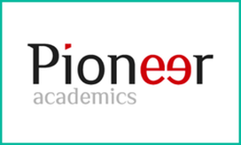

Education
 University of Southern California - August 2017-present
University of Southern California - August 2017-present
Los Angeles, CA
- Viterbi School of Engineering
- Major: Computer Science, B.S.
- GPA: 3.93
Shenzhen Foreign Languages School - August 2014-June 2017
Shenzhen, Guangdong, China
- Principal's List × 5
- Honor Graduate
- GPA: 4.22
Experience

Pioneer Global Research Program
Researcher and Student
Online
February 2017-July 2016
- Wrote multiple Python scripts to analyze data, researched on LIGO and gravitational waves
- Mentored by Dr. Myers from West Point
- Working directory posted on Github
- Final paper posted (or published) on LIGO's official website
 USA Computing Olympiad Training @ training.usaco.org
USA Computing Olympiad Training @ training.usaco.org
Participant in the individual online traning camp
Online
February 2017-present
- Practiced algorithms (dynamic programming, graph theory, etc.) in C++
- Solved more than 50 problems
- Codes on Github, in directory USACO\ Training/
Computing & Robotics Club
Club Member
Shenzhen Foreign Languages School, Shenzhen, China
May 2015-April 2017
- Wrote code for the gyroscope on my fellow robotics team’s flying drone
- Used Python and Pygame to visualize stellar body motion and to develop Greedy Snake game